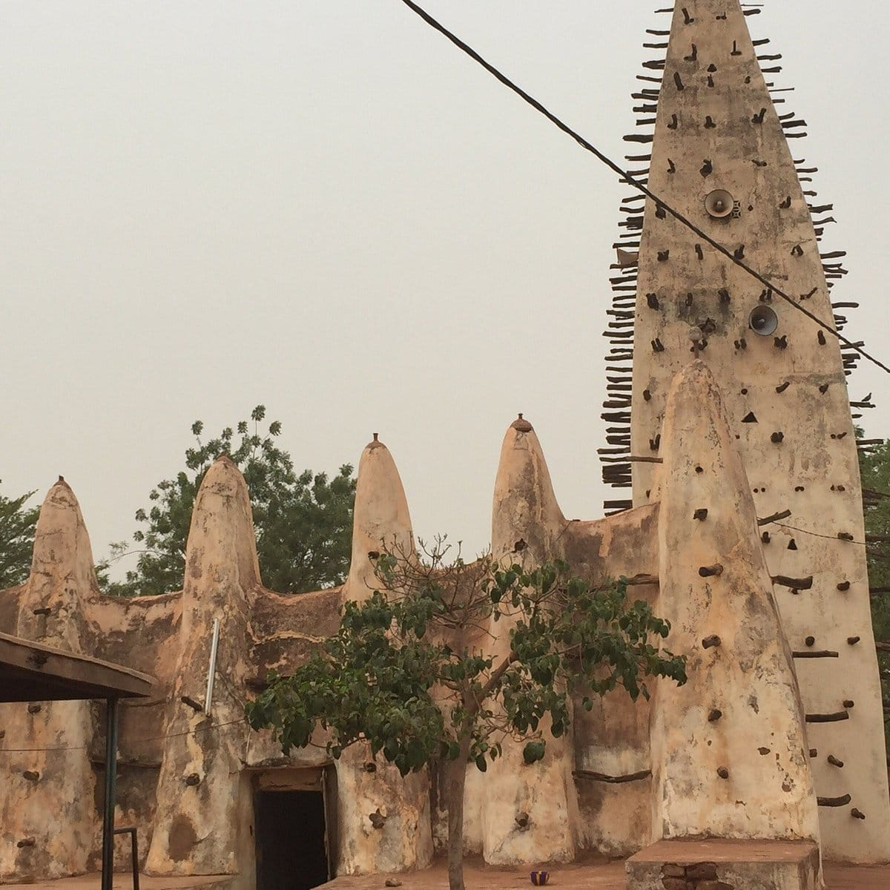

La Grande Mosquée de Dioulassoba

Historique et Origines
Construite entre 1880 et 1890 sous la direction de l'Imam Sidiki Sanou, la vieille mosquée de Dioulassoba est l'un des plus anciens et des plus prestigieux édifices religieux du Burkina Faso. Témoin de l'expansion de l'islam dans la région, elle porte le nom du quartier qui l'abrite, "Dioulasso-bâ", le cœur historique de Sya.
Architecture Soudano-Sahélienne
Ce chef-d'œuvre est entièrement bâti en banco (terre crue mélangée à de la paille) selon les principes de l'architecture soudanaise. Sa structure se distingue par ses minarets en forme de pain de sucre hérissés de poteaux en bois de rônier (les torons). Ces bois servent non seulement de décoration mais aussi d'échafaudage permanent pour le crépissage annuel des murs.
Un symbole de foi et de culture
À l'intérieur, 42 piliers massifs soutiennent une toiture percée de jarres en terre cuite qui laissent passer la lumière zénithale, créant une atmosphère mystique et fraîche, idéale pour la prière et la méditation. Elle peut accueillir plus de 800 fidèles.